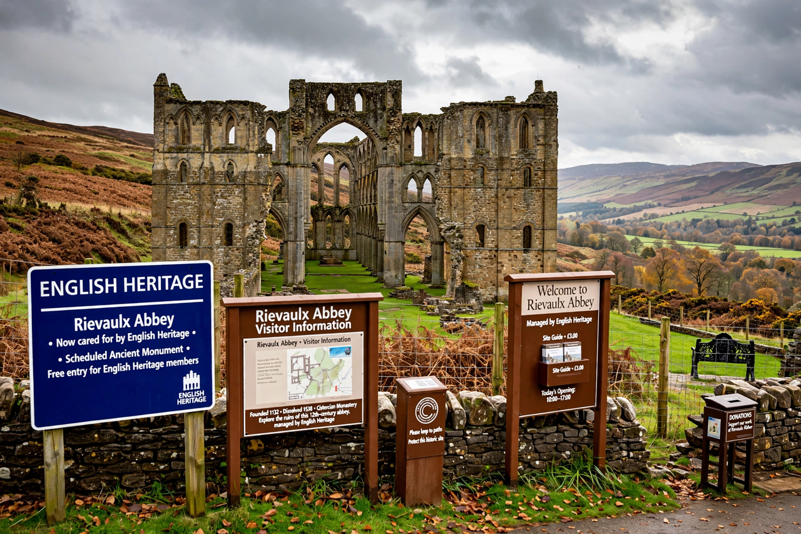

English Heritage
From Wikipedia, the free encyclopedia

English Heritage (officially the English Heritage Trust) is a charity that manages over 400 historic monuments, buildings and sites in England — from Stonehenge and Hadrian's Wall to Dover Castle, Ironbridge and the homes of Darwin and Wellington — on behalf of the nation. Created as a government agency in 1983 (successor to the Ministry of Works' ancient-monuments role), it became an independent charity in 2015, caring for the state-owned National Heritage Collection under licence.
Role
English Heritage conserves and presents its sites, runs events (jousts, re-enactments, Halloween nights) for over a million members and millions of visitors, and campaigns on heritage protection; the statutory listing and planning-advice functions of the old body passed in 2015 to Historic England, leaving English Heritage the public-facing custodian. The blue plaques scheme for London (inherited 1986) is its famous sideline.
Debates
The charity model — self-funding through admissions and membership — has driven commercial flair (Stonehenge's visitor centre, Tintagel's footbridge, contested as spectacle) and periodic rows over interpretation, from 'enchanted' marketing to arguments about whose history the sites tell. Its portfolio is England's biography in stone: prehistoric monuments, Roman frontiers, abbeys dissolved and castles slighted, country houses and Cold War bunkers.